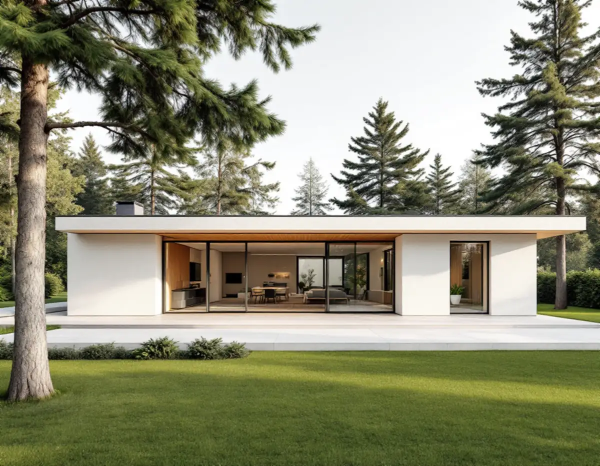
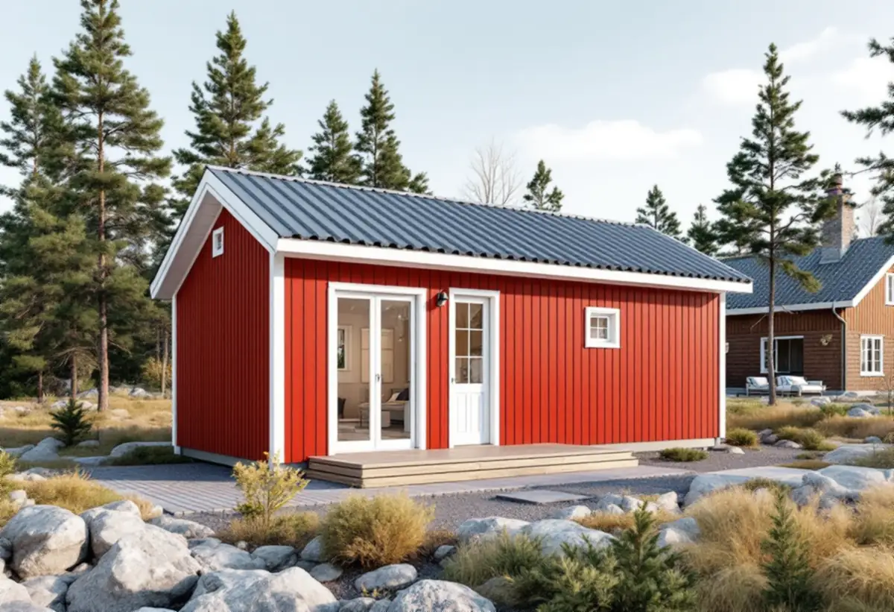

Besök på tomten
Vi ser huset, tomten och terrängen och går igenom vad du vill bygga.
Som byggföretag i Täby bygger vi till, bygger nytt på tomten och renoverar villor och radhus som total entreprenad, med en kontakt från ritning till slutbesiktning. I Täby styrs mycket av vilken epok huset tillhör och av kommunens råd för kulturmiljöer, så vi börjar med huset och reglerna innan något ritas.

De flesta byggprojekt på Täbys villatomter handlar om mer yta eller om att förnya ett hus som börjar bli gammalt. Det kan vara en tillbyggnad mot trädgården, ett gästhus eller attefallshus för en vuxen son eller dotter, en inredd vind eller en renovering av hela villan med nytt kök, badrum och ytskikt. Ofta blir det en kombination, och då är det en fördel att ett företag håller ihop helheten.
Vi arbetar som total entreprenad: du har en kontakt, vi samordnar snickare, plattsättare, målare och behöriga installatörer för el och VVS, och vi ansvarar för att delarna passar ihop. Vill du veta mer om hur det fungerar, se byggfirma i Stockholm.

Täby har villor från alla epoker. I Roslags-Näsby och Viggbyholm står villor från 1900-talets första decennier med sadeltak eller brutna tak, i Näsbypark finns villor från 1920-talet och funkishus från 1940-talet med låga takfall, och i kyrkbyn till exempel en villa från 1962 med svarta betongpannor. Radhusområdena Midgård och Miklagård byggdes 1972–76 och Norskogen 1957–59.
En tillbyggnad på en trävilla från 1910-talet ställer andra krav än en på ett radhus från 1970-talet. I den äldre villan ska ny stomme anslutas till gammal, ofta med en takfot och en panel som ska se ut som originalet. I grupphuset är frågan i stället hur tillägget passar in i en hel länga som ritades som en enhet.
Täby kommun har antagit Kulturmiljöer i Täby, med råd och riktlinjer som enligt kommunen gäller för alla områden som underlaget tar upp. För småhusområden skriver kommunen att tillbyggnader bör vara underordnade huvudbyggnaden, att husets ursprungliga uttryck och färgsättning bör vara vägledande och att befintliga takformer, takmaterial och takfotens utformning bör behållas och väljas även för det som byggs till. Inom kulturhistoriskt värdefulla områden bör tillbyggnaden hamna mot trädgårdssidan.
För grupphusområden går råden ett steg längre. Carport och altan ska anpassas till husens formspråk, utan avvikande takvinklar, för stora volymer eller kraftiga kontraster i material och färg, och ursprungliga fönsterformat bör behållas. Kommunen vill också att markarbeten som sprängning, fyllning och schaktning hålls nere och att tomterna får behålla sin naturliga topografi.
Riktlinjerna är kommunens styrdokument för kulturmiljöerna. Vi läser dem för ditt område innan vi skissar, så att förslaget går att genomföra.
Sedan den 1 december 2025 får ett en- eller tvåbostadshus byggas till med sammanlagt högst 30 kvadratmeter utan bygglov, så länge tillbyggnaden inte går över taknocken. Placeras den närmare fastighetsgränsen än 4,5 meter krävs grannens skriftliga medgivande. Ett komplementbostadshus är lovfritt upp till 30 kvadratmeter och 4 meters höjd inom detaljplan, och de lovfria komplementbyggnaderna på tomten får tillsammans vara högst 45 kvadratmeter. Friggebod och attefallshus finns inte längre som begrepp i lagen.
Täby kommun påpekar att bygglov krävs även för sådant om fastigheten ligger i ett kulturhistoriskt särskilt värdefullt område. Lovfritt betyder heller inte anmälningsfritt: väsentliga ingrepp i bärande konstruktion och installation av vatten, avlopp eller ventilation kan kräva anmälan och startbesked. Ändras markens höjd mer än en halv meter inom detaljplan krävs marklov. Kommunen granskar inte lovfria åtgärder i förväg, så ansvaret för att reglerna följs ligger på dig som byggherre – och på oss som bygger.
Vi ser huset, tomten och terrängen och går igenom vad du vill bygga.
Detaljplan, Täbys kulturmiljöråd och lov- eller anmälningsplikt kontrolleras.
Du får ett skriftligt kostnadsförslag som visar vad som ingår och vad som är ROT-arbete.
Där det krävs tar vi fram underlag, och bygget startar när besked finns.
Grund, stomme, tak och installationer samordnas av oss, med behöriga installatörer för el och VVS.
Vi går igenom arbetet tillsammans med dig och lämnar över dokumentationen.
Rotavdraget är 30 procent av arbetskostnaden, högst 50 000 kronor per person och år och högst 75 000 kronor ihop med rutavdrag. Det gäller reparation och underhåll samt om- och tillbyggnad, det senare bara om huset är äldre än fem år. Material, bygglovshandlingar, arkitekt och besiktningsman ger inget avdrag.
En tillbyggnad ger avdrag om någon av dess sidor sitter ihop med husets yttervägg till minst 75 procent. Ett helt nytt fristående hus på tomten, som ett gästhus eller garage, ger enligt Skatteverket inget rotavdrag. Vi drar avdraget direkt på fakturan där det gäller.
Storlek, grundläggning och hur mycket som ska anslutas till det befintliga huset styr mest. På kuperade tomter i Näsbypark och Viggbyholm påverkar terrängen grunden, och i ett grupphusområde kan kommunens råd styra materialval och utformning. Installationer för badrum eller kök i en tillbyggnad tillkommer. Platsbesöket är gratis och du får ett skriftligt kostnadsförslag.
Total entreprenad för villan.
Byggfirma →Takbyte, takbesiktning och plåtarbeten.
Takläggare i Täby →Näsbypark, Viggbyholm och Gribbylund.
Takrenovering i Täby →Kulör per kvarter och provytor.
Fasadmålning i Täby →Villastäder och grupphus i Täby.
Fönsterbyte i Täby →Stationsvillor, funkis och grupphus i Täby.
Plåtslagare i Täby →Betongpannor, kedjehus och tegelvillor.
Takbyte i Täby →Byle, kyrkbyn och detaljplanen.
Tillbyggnad i Täby →